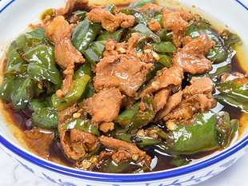

Home

描述
一盘地道家常的辣椒炒肉，色泽油亮诱人。
肥瘦相间的五花肉煸炒得微微卷曲，边缘焦香出油，酱色浓郁透亮；青线椒、小米辣切滚刀块，鲜绿点缀其间，带着微微焦边。
油脂裹满每一块肉和辣椒，汤汁清亮不腻，烟火气十足，肉质鲜香不柴，辣椒鲜辣入味，红绿相间超有食欲，妥妥的下饭硬菜。
成分
- 五花肉
- 螺丝椒
- 大蒜、生姜、豆豉
- 食用油、食盐、生抽、老抽
- 耗油、少许白糖、胡椒粉
步骤
- 切配：肉切薄片，青椒斜切滚刀块，蒜姜切片，豆豉洗净备用。
- 煸肉：锅不放油，下肉片小火煸炒，炒出油脂、肉片微卷焦黄，盛出备用。
- 爆香：锅里留底油，放姜蒜、豆豉小火炒出香味。
- 炒青椒： 倒入青椒大火翻炒，炒至青椒断生、表皮起皱。
- 合炒调味：倒回炒好的肉片，加生抽、少许老抽、蚝油、一点点白糖、适量盐，大火快速翻炒均匀入味。
- 出锅：翻炒十几秒收汁，直接装盘即可。